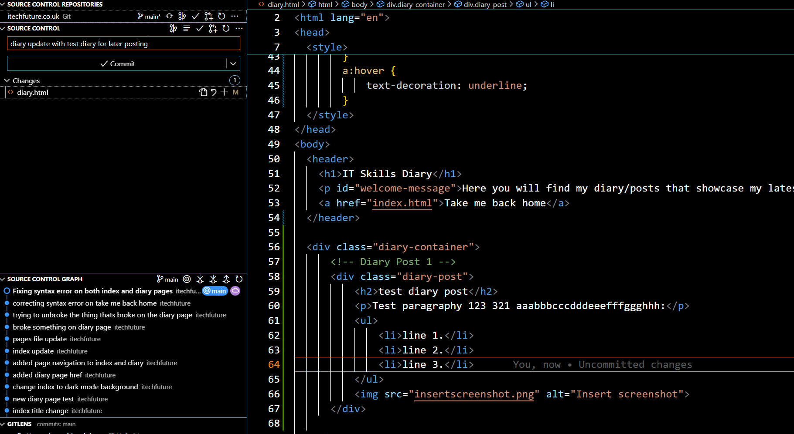

Loading...
Here you will find my diary/posts that showcase my latest projects such as homelab testing, coding projects like this HTML static website and much more!
Take me homeIntroduction - A few years ago, I purchased the domain itechfuture.co.uk as a testing ground for web development. At the time, it felt like a random purchase, but it has since become a foundation for learning new IT skills.
I was looking for a free way to link an existing domain and host a static webpage. Since I already used GitHub for managing game development repositories, it felt natural to explore GitHub Pages feature. Learning to build a site using HTML on this platform seemed like a great opportunity to expand my skills.
Setting up the DNS was straightforward, thanks to GitHub’s setup instructions. I created a TXT record in my domain provider’s DNS manager to match GitHub’s provided value. Next, I added an A Name record to point to GitHub Pages' IP addresses. After completing these steps, I clicked "Verify DNS Server" on GitHub. A few minutes later, I received the confirmation: "DNS confirmed".
The second stage was more complex: configuring Git to sync my local files with the GitHub repository. I downloaded Git for Windows (v2.48.0). On my first attempt, I encountered issues in Visual Studio Code (VSC) due to incorrect installation settings. On my second try, I followed a detailed guide and adjusted the PATH environment by selecting "Git from the command line and 3rd-party software."
To authenticate my machine with GitHub, I generated a SSH key in the command prompt. After copying the key into GitHub’s SSH settings, I ensured secure authentication for all future repository updates.
To streamline my workflow, I configured Visual Studio Code as my code editor. I found this guide on YouTube particularly helpful for setting up Git integration with VSC. I plan to revisit it frequently as I familiarise myself with the workflow. (https://www.youtube.com/watch?v=i_23KUAEtUM&t=300s)
This process taught me several important skills and concepts: The importance of carefully following instructions, especially when configuring technical tools like Git and DNS settings. How to generate and use SSH keys for secure authentication. The value of leveraging resources like guides and tutorials (e.g., the YouTube video on Visual Studio Code). As part of my learning journey, I’ll be posting this diary update and future updates about my development progress on the website I’ve created. This will serve as both a portfolio and a personal record of my growth in IT and web development. Moving forward, my next goal is to design and deploy a simple yet visually appealing web page using HTML and CSS, gradually adding more dynamic features over time.
Loading...